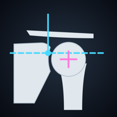

肩X線計測 サポート
「肩X線計測」は、肩関節のX線画像に解剖学的な指標点を手動でプロットし、AHI・CSA・LSA・DSA・GPA・RSA角や回転中心の位置などを計算する、研究・教育用の計測ツールです。
使い方
詳しい使い方（取扱説明書）
- 「ファイル」「カメラ」から画像を取り込みます。スマートフォンでモニターやフィルムを撮影した場合は「台形補正」で4隅を指定してゆがみを直します。
- 左の一覧から項目を選び、画像上をタップして点を置きます。ドラッグで位置を直せます。拡大鏡が表示されます。
- 座標系は棘上窩底線（SFL）を X 軸、ピラー線との交点を原点とします。較正（glenosphere 径・2点間距離・mm/px）を行うと mm で表示されます。
- Hamada・Samilson・Walch・Favard・Sirveaux・Neer の目視分類は「見本」で模式図を確認できます。
- 「保存」で端末内に保存し、「症例一覧」から CSV・バックアップ（JSON）を書き出せます。
よくある質問
画像はどこかに送信されますか？
いいえ。画像と計測結果はこの端末の中だけに保存され、外部には送信されません。氏名などが写っている画像は、切り取ってから取り込んでください。
医療機器ですか？
いいえ。研究・教育用の計測ツールであり、診断や治療方針の決定に用いることを目的としたものではありません。
お問い合わせ
ご意見・不具合のご報告は、下記までメールでお送りください。
natchi@symphony.plala.or.jp
プライバシーポリシー